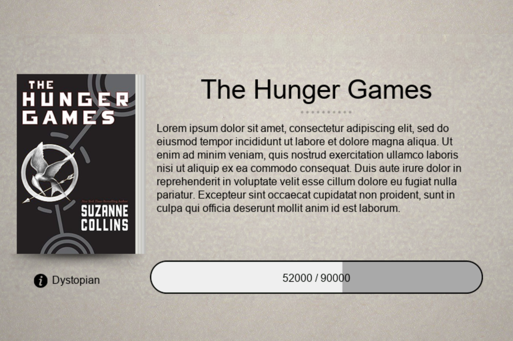
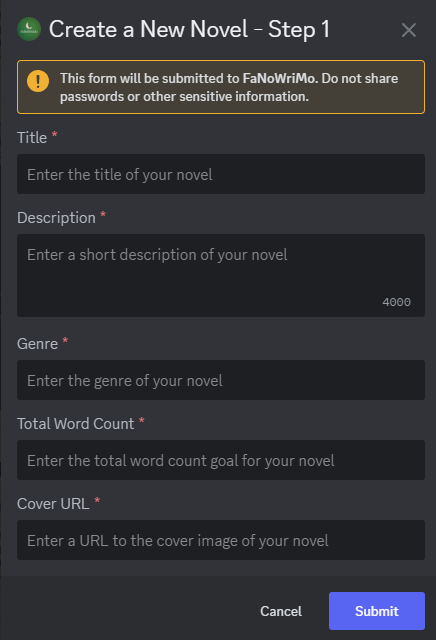

FaNoWriMo | Full Guide
Disclaimer:
The bot is available only in November. The next FaNoWriMo event runs from November 1 to November 30, 2026. Join our Discord server to use the bot.
What is FaNoWriMo?
Fantasy Novel Writing Month is a 30-day challenge where writers track their progress toward a 50,000-word goal. Participants may also earn special roles.
Our Discord bot lets members register their novels and track their writing progress. It also supports multiple novels, so you can keep track of more than one project.
The bot stores only your novel's title, synopsis, word count, genre, and cover image.

Getting Started
1. Create a novel
Run the /novel_create command. A form will appear.

- Title
If you do not have a title yet, use a placeholder that fits your story. Please avoid generic titles such as "Untitled" or "TBA." - Description
Keep your description under 4,000 characters. Share as much or as little as you like. A description helps other members get a sense of your story. - Genre
If your novel fits several genres, separate them with a slash. - Total Word Count
Enter the current total word count of your novel. - Cover URL (180 x 270 pixels)
Upload your book cover to ImgBB. Open the uploaded image in a new tab, copy its direct link, and paste it into the Cover URL field. The direct image link is required.
2. View Your Novel
Run the /novel_info command to generate your novel card.
The card displays the information you entered in the form.
The example progress bar may already show some progress. Your progress will start at zero.
Here is how to update your word count as you write.
3. Update Your Word Count
Run the /add_wordcount command.
A menu will show your registered novels. Select the one you want to update, then enter the number of words you wrote that day in the add_word_count field.
4. Edit or Delete Your Novel
/edit_novel
Run the command, then select the novel you want to edit from the list./delete_novel
Run the command, then select the novel you want to delete. It will be permanently removed, and this action cannot be undone.
You have completed the guide. If you run into any issues, ask for help in the Discord server.
Frequently Asked Questions
Find answers to some of the most common questions below.
FaNoWriMo stands for Fantasy Novel Writing Month. It is an annual writing challenge for fantasy writers, hosted entirely on Discord.
The goal is to write 50,000 words. You can work on a manuscript you have already started or begin a new one. The choice is yours!
Our Discord bot lets members register a novel, track its progress, add a cover, and customize its display.
NaNoWriMo was a well-known writing challenge held every November. Writers aimed to complete a 50,000-word novel in 30 days.
FaNoWriMo is similar, but focuses on fantasy and takes place on our Discord server, where writers can connect and support one another.
Disclaimer: NaNoWriMo is no longer an active organization as of 2025.
The FaNoWriMo bot is available only on our official FantasyWriters Discord server. It’s not a public bot, so you’ll need to join the server to use it.
No. Everything runs on our Discord server. Join the server and use the bot commands in the appropriate channels.
Use bot commands such as /add_wordcount or /setgoal in the Discord server. The bot will update your stats and help you stay on track.
Absolutely. You can work on a project already in progress or start a new one. Be honest about your word counts and goals. The challenge is here to help you finish!
When you register a novel, we save its title, synopsis, word count, genre, book cover, and your Discord username.
You can delete your story at any time with the /delete_novel command. This will delete everything and cannot be undone.
Once deleted, all information about your novel and anything linked to your Discord username will be permanently removed. If you have questions or concerns about your data or privacy, please contact us or create a ticket in our Discord server.